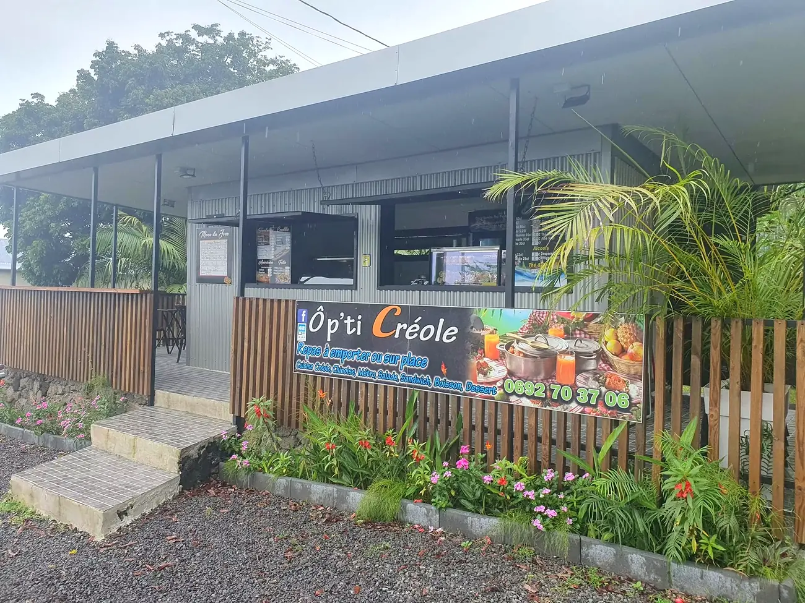
Au bord de la RN2 · Sainte-Rose, La Réunion
Ô p'ti Créole
Repas à emporter ou sur place
Cuisine créole, chinoise, métro, salades, sandwichs, boissons et desserts, servis le midi dans un p'ti coin plein de verdure.
118 RN2, Sainte-Rose · Le midi, 10h30 – 14h · 0692 70 37 06
Le p'ti coin
Un arrêt gourmand sur la route de Sainte-Rose
Ô p'ti Créole, c'est un restaurant de repas à emporter ou sur place, avec des salades et des sandwichs. Le comptoir s'ouvre sous une grande avancée, entre palissade en bois, palmiers et fleurs : on commande, on s'installe en terrasse ou on repart avec son repas.
« Belle découverte ! plats délicieux et copieux, bon accueil. Adresse qui mérite l arrêt et la dégustation ! »Avis publié sur la page Facebook
« Très bons plats créoles ! Nous nous sommes régalés ! »Avis publié sur la page Facebook
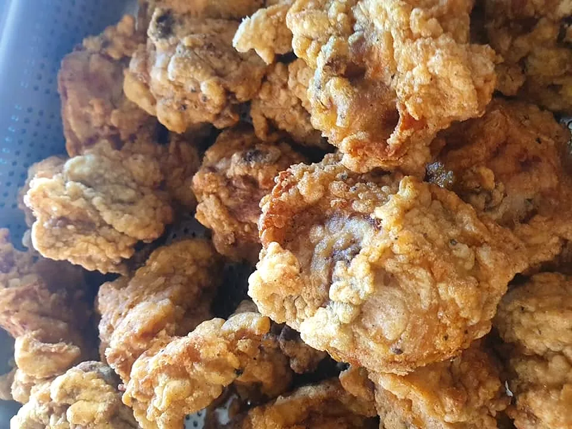
Le menu du jour
« Aujourd'hui Ô p'ti créole vous propose… »
Au comptoir, l'ardoise « Menu du Jour » ; sur la page Facebook, les plats annoncés. Voici l'un de ces menus, publié par Ô p'ti Créole : cari, rougaille, gratin, salades fraîches, à emporter ou à déguster sur place.
Le menu change selon les jours : un message sur WhatsApp et vous savez ce qui mijote.
Menu du Jour
Ô p'ti Créole
- Cari coq palmiste
- Rougaille saucisses
- Gratin dauphinois & poulet croustillant
- Salade fraîcheurs
- Achard poissons
menu publié le 9 août 2022
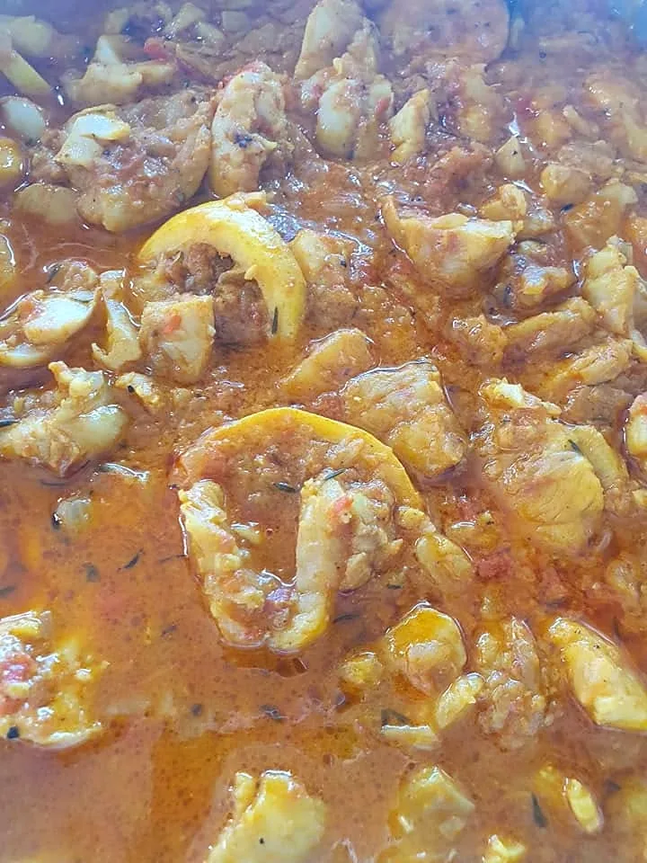
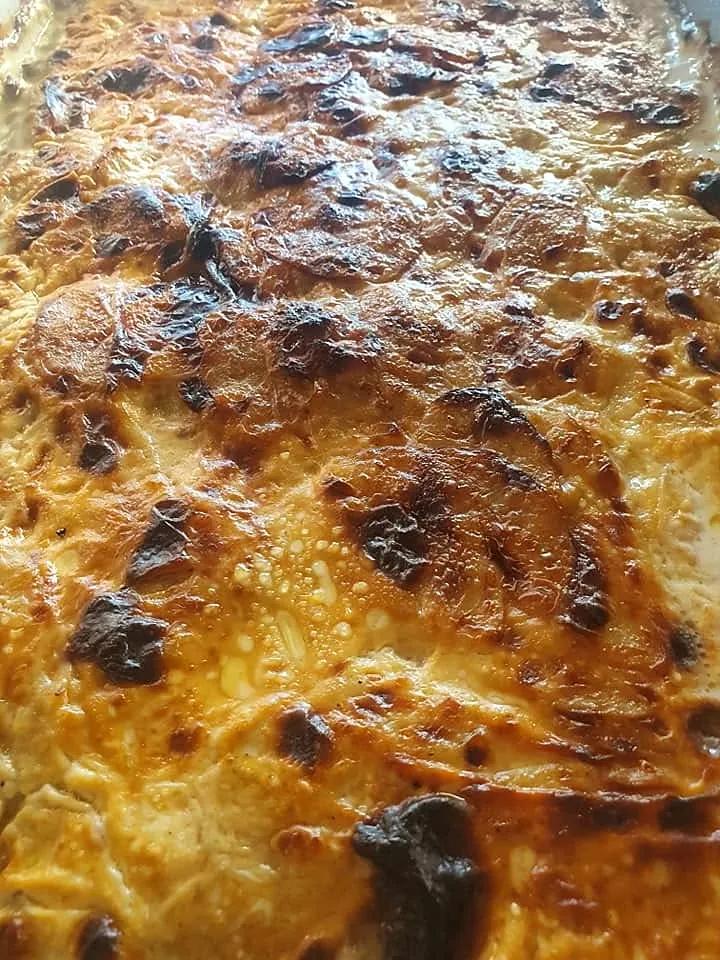
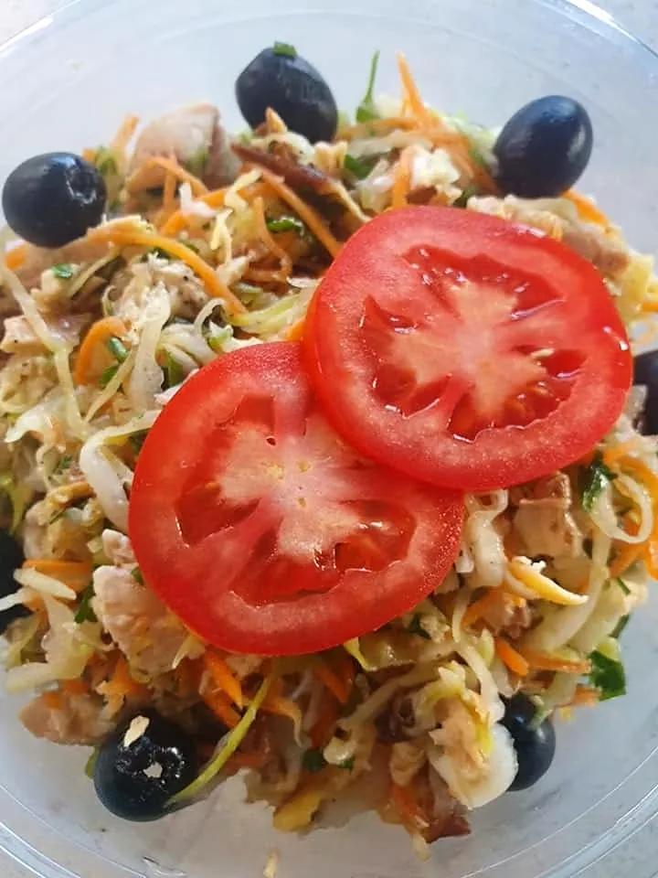
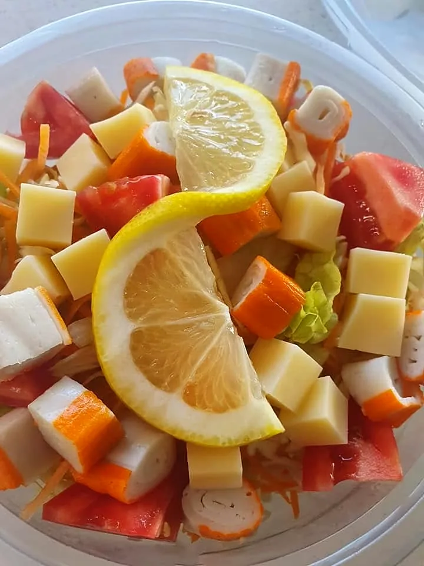
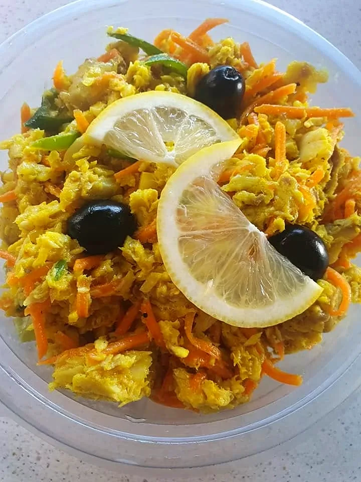
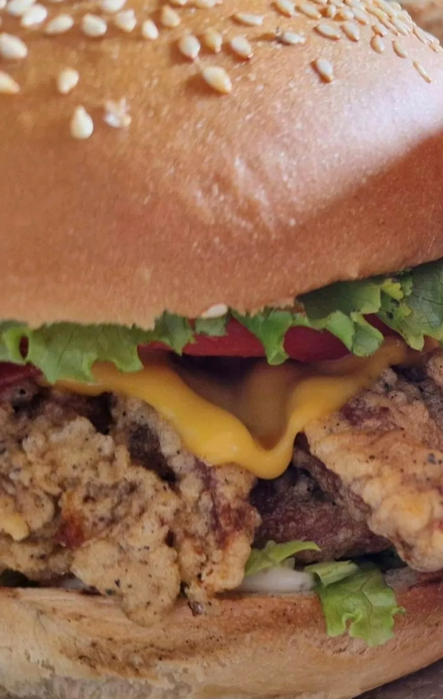
Faites glisser pour voir les plats
Fait maison
Le burger et le bol renversé
Deux envies de la carte, annoncées sur la page : le burger maison au poulet croustillant avec ses frites maison, et le bol renversé au poulet, le grand classique sino-réunionnais.
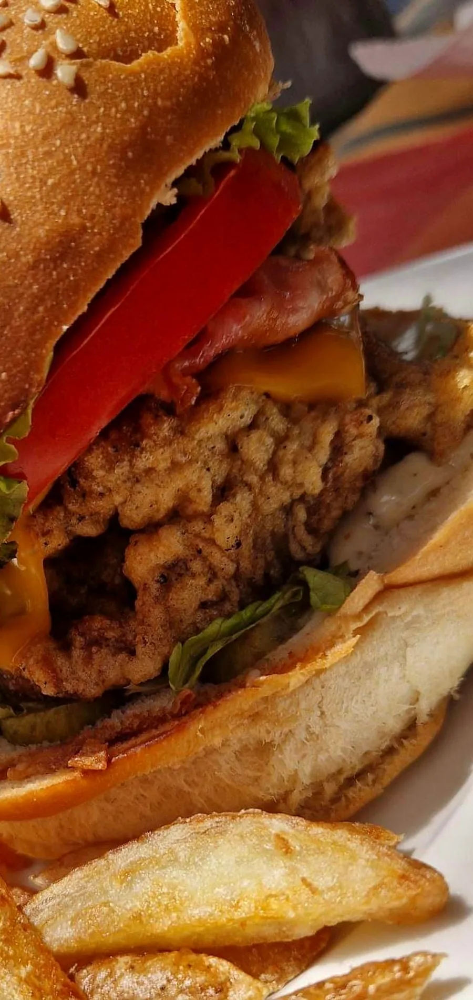
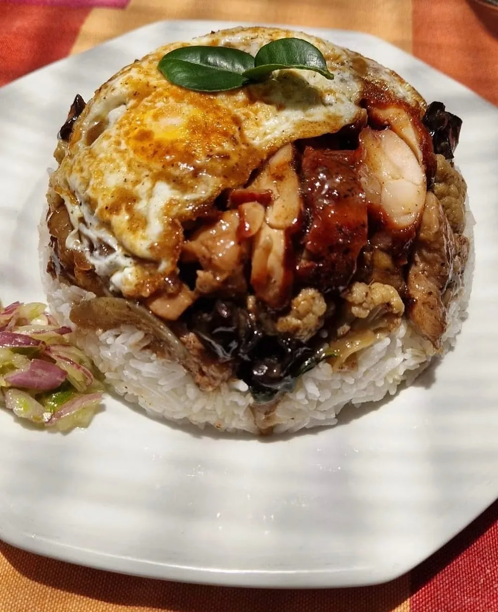
Spécialité de la côte
La salade de palmiste
« Ô p'ti créole vous propose aujourd'hui sa salade de palmiste »
Du palmiste finement taillé, un quartier de citron vert, quelques feuilles de persil : toute la fraîcheur de l'Est, servie dans sa boîte pour le pique-nique ou sur place à la terrasse.
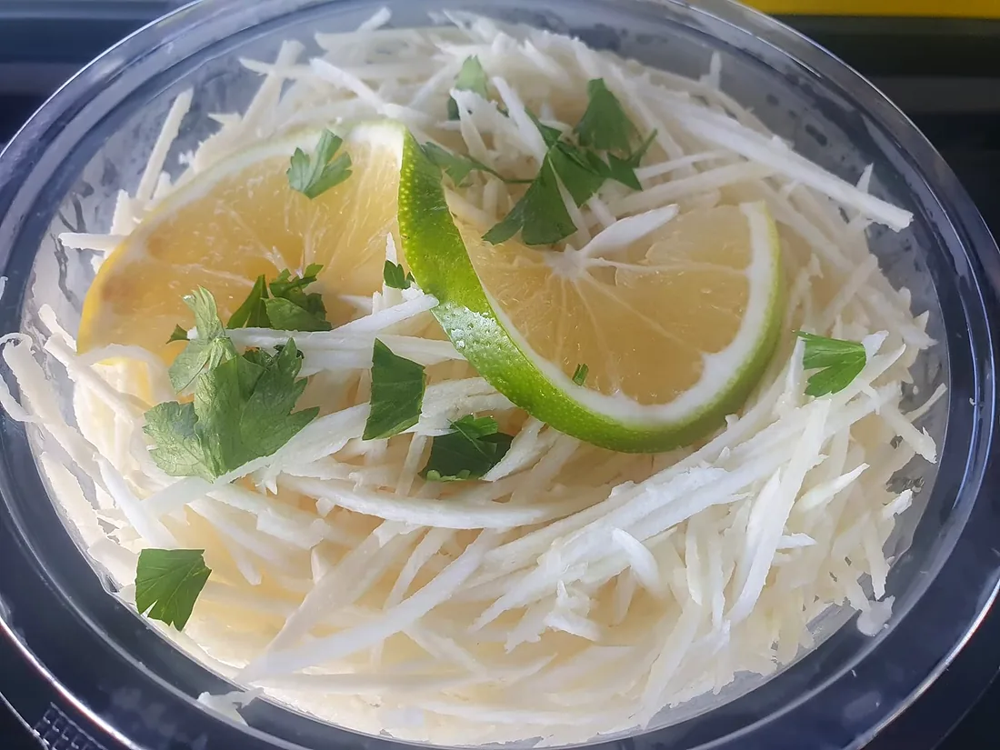
Pour Noël et les fêtes
Vos plats des fêtes, signés Ô p'ti Créole
Un repas de famille tout prêt
Réservez vos plats à emporter et profitez pleinement de la journée avec les vôtres.
Le pique-nique de fin d'année
Caris, salades et sandwichs à emporter, pour un pique-nique au volcan ou au bord de l'océan.
Une pause gourmande sur la route
En route vers les coulées de lave ou les retrouvailles de famille, un arrêt à la terrasse fait toujours plaisir.
Un message suffit pour réserver votre commande des fêtes : Ô p'ti Créole vous répond avec plaisir.
Réserver pour les fêtesVenir · Réserver
On vous attend à Sainte‑Rose
Adresse · 118 RN2, 97439 Sainte-Rose
Téléphone · 0692 70 37 06
Service · le midi, de 10h30 à 14h
Formule · à emporter ou sur place, en terrasse